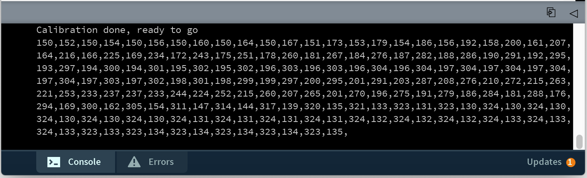

6.810 Engineering Interactive Technologies (fall 2021)
Pset 5: Gesture Recognizer & Touch Pressure Visualizer
In this problem set, you will implement a gesture recognizer that can detect different finger gestures on your multi-touch pad and then execute the corresponding functionality. After this, you will visualize how hard the user is pressing with each finger on the multi-touch pad by visualizing touch pressure in 3D.
Steps:
- Learn about $1 Unistroke Gesture Recognizer
- Train Gesture and Connect to Call-Back Function
- Track and Visualize Gestures
- 3D Visualization: Draw 3D Viewport
- Implement Camera Motion
- Draw Touch Pressure into 3D Viewport
Get a new multi-touch pad from a TA:
If your printed multi-touch pad is degrading, let us know and we can give you one that we fabricated to test if it's really the multi-touch pad or something in your circuit/code.
(1) Learn about $1 Unistroke Gesture Recognizer
Now that you can recognize where the user is touching, we can also implement gesture recognition. A gesture is a series of touch points that execute a specific function. For instance, if the gesture is swiping from left to right, your code should recognize that the user made this gesture and if the gesture is a drawn 'A' your code should know that an 'A' was drawn.
$1 Unistroke Gesture Recognizer: Luckily, you don't have to implement the gesture recognizer from scratch. Instead, you can use the $1 Unistroke Recognizer, which is available as a Processing library. The $1 Unistroke Gesture Recognizer is part of the so-called $1 Gesture Recognizer family, i.e. a set of different gesture recognizers with different capabilities, such as single stroke gesture recognition, multi-stroke gesture recognition etc. In this pset, we are going to use the $1 Unistroke Recognizer since it is the only one that is available for Processing as a library.
Gestures the $1 Unistroke Recognizer can detect: Unistroke means that the gesture recognizer can only recognize gestures that are made by one finger in one continous stroke. For instance, consider the 2 gestures shown below designed for the letter "A". The left one is written in one continous stroke and thus can be recognized by the $1 Unistroke recognizer. The right one, however, is written in two separate strokes and thus cannot be recognized. Similarly, you can recognize a single finger swipe left/right gesture but you cannot recognize a zoom gesture with two fingers since that would require combining two separate strokes into one gesture. The $1 family also has a multi-stroke recognizer but as mentioned previously it is not available as a library for Processing.

Stroke Orientation: The gesture recognizer ignores the stroke orientation. Consider the example below on the left, which shows the same gesture but executed in different orientations on the multi-touch pad. The gesture recognizer automatically compensates for the change in orientation and will detect that both of the gestures are the same.
Stroke Direction: While the recognizer ignores stroke orientation, it considers stroke direction, which corresponds to the vector direction of the line along which your finger moves. For example, the two gestures shown below on the right are visually identical but in the first gesture we start on the top left, while in the second gesture we start on the bottom left. Therefore, although visually the same gesture, the $1 recognizer is able to distinguish them as two different gestures.

Try the Gesture Recognizer for yourself on the Demo Webpage: Before you move on, try out the interactive demo of the $1 Unistroke Recognizer that you can find here on this website. Scroll down to the Demo section and you see 16 different gestures you can draw into the gray window on the right side. Draw each of the gestures once to get a feel for how different gestures are designed and how well they can be classified. After you drew a gesture, you will see its classified name at the top of the window. You can also make your own gesture by first drawing your custom gesture into the gray drawing window and then giving it a name in the Add as example of custom type: field, then click Add. If you now draw your custom gesture again, it should be correctly classified.
(2) Train Gesture and Connect to Call-Back Function
Now that you know a bit more about what the $1 Unistroke recognizer can and cannot do, you can move on to use the recognizer to detect gestures.
Import $1 Unistroke Recognizer Library into Processing: Start by importing the '$1 Unistroke Recognizer' library by going to Sketch -> Import Library and finding it through the search bar. Next, import the $1 Unistroke Recognizer library into your Pset Processing code.
import de.voidplus.dollar.*;
Instantiate new Gesture Recognizer: Construct a new object of the one dollar recognizer with:
OneDollar oneDollar = new OneDollar(this);
Turn on Console Plotting: Turn on console plotting for the gesture recognizer using the line below. Later, when you make your gestures, the gesture recognizer will immediately print the name of the gesture on the console and also provide how similar it is to the closest match from the recorded template gestures (e.g. 84% similar).
oneDollar.setVerbose(true); // activates console plotting
Load Pre-Recorded Gesture Training Data: Before we can detect a gesture, we have to provide the gesture recognizer with training data. We will provide you with prerecorded training data for three different finger gestures: a 'V', a 'XX', and a 'YY'. This prerecorded training data is contained in your Processing program in array gestureVtraining[]. Below you see the array that contains the gesture coordinates for our 'V' gesture.

Train New Gesture Based on Training Data: Next, use the pre-recorded training data to and feed it into the learn() function to add the new gesture.
oneDollar.learn(String gesture-name, int[] x-y-coordinates); // {x1, y1, x2, y2, x3, y3, x4, y4, ...}
Adding a Call-Back Function to your Gesture: Now that you have added your custom 'V' finger gesture to the gesture recognizer, you next have to define which function should be called when the gesture is being detected. Such a function is called a callback function and it will be triggered every time the algorithm detects the corresponding finger gesture. You can bind a finger gesture to a callback function via the command below. Note that the parameter callback-function-name is the name of the function without parenthesis and parameters. For now just create the functions and we will add the rest later.
oneDollar.bind(String gesture-name, String callback-function-name);
Implement the Callback Function: Next, you need to implement the callback function. The callback function has to have the format shown below, i.e. contain the same number of parameters and parameter types and return void. The function name and parameter names, however, are up to you. If upon recognizing the gesture, you just want to execute some action, you can simply add that code into the function body. If you want to build a location dependent gesture, you can also check where on the multi-touch pad the gesture started or ended using the coordinates provided by the callback function.
void foo(String gesture-name, float percentOfSimilarity, int startX, int startY, int centroidX, int centroidY, int endX, int endY){
// do something when the gesture is detected
}
(3) Track and Visualize Gestures
Now that you have defined how your gesture looks like and what function should be called when it is detected, you still have to tell your code when it should start looking for the gesture.
Start tracking when Finger Blob Detected: We want to start tracking gestures when our code detects a finger blob. Therefore, you need to add the tracking function below in the blob detection method where it determines if a finger was successfully detected. The x/y coordinate in the function are the x/y coordinate of your touch point.
oneDollar.track(int x-coordinate, int y-coordinate);
Note that you don't have to 'stop' tracking. The track() function will only be executed when Processing goes through its loop and detects a finger blob, and if no finger has been present for a while, i.e. no new data is fed to the gesture recognizer, the recognizer will automatically determine that the gesture has ended and will provide its best guess at what gesture was executed.
Load Pre-Recorded Gesture Data: Next, let's load some pre-recorded gesture data that was actually recorded on a multi-touch pad. We will use prerecorded data from a text file again to make this easier for you. Open the Arduino program that can stream prerecorded data and replace the file path with 'gesture.txt' that you can download from here. The data contains two V gestures (first 5 seconds), followed by two XX gestures (second 5 seconds), followed by two YY gestures (third 5 seconds).
Visualize Gesture Detection Result: Finally, once your gesture is detected, your callback function should visualize the detected gesture. For this, you should write the name of the detected gesture into the Processing UI window as shown in the top left corner of the images below and also draw the touch point centers into the window (discard the blob contour). The touch point centers should be visible in the window for a while even after you lift your finger from the multi-touch pad (e.g., show them for another 2 seconds before removing them from the window). You can implement this by storing the touch point centers in a separate array. Draw the array points when the array is not empty, and clear the points in the array whenever it exceeds the 2 seconds time after the gesture was recognized (use the millis() and System.nanoTime() functions from PSet4 for this). The image down below shows an example of the UI when the "Z" gesture is recognized.
(4) 3D Visualization: Draw 3D Viewport
In the previous section, we used the touch locations to recognize gestures. Next, we will also detect touch pressure and visualize it in the user interface. To visualize the touch pressure, you are going to use a 3D visualization, in which the height of the touch point represents how much pressure is applied. Below you can see an example: on the left side only little pressure is applied and the touch bar is small, whereas on the right side a lot of pressure is applied and the bar is much higher.

Load Pre-Recorded Touch Data with Different Pressure Levels: We prerecorded another set of touch data for you that has different pressure levels, it comes again in the form of a text file that you can download from here. It contains one finger touching three times at different pressure levels (first 5 seconds), then two fingers touching three times at different pressure levels... Change the file path in your Arduino program to send this data to the Serial port.
Skeleton Code: If you look at your code, you will see that we already defined several variables and functions for you that are related to the 3D visualization (e.g., the axis and camerapos parameters and the drawAxis(), cameraViewControl() and update3DImage() functions).
replace image
Drawing the XYZ axes for 3D Visualization: Let's start by drawing the XYZ axes for 3D visualization in the drawAxis() function. Note that we are in 3D now, not 2D so you need 3 coordinates for defining the positions of your points/lines.
Direction of Axis: The question that arrises is which axis is x, y, and z, and which way is positive and negative. In Processing, it uses the convention as shown below. Note that because of this convention, you need to draw the Y axis and the sensing data on the y-axis in negative direction so it is pointing "up".

Length of Axis: The length of the x and y axes should be the width and height of your interpolated PImage.
The length of the Y axis should be slightly higher than the maximum pixel value (brightness) of your interpolated PImage so you have some space at the top.
Color of the Axis: In addition to generating the axis lines, you need to color the axis by drawing a colored dot at their end. We will use red for the x-axis, green for the y-axis, and blue for the z-axis (since "RGB" corresponding to "XYZ").
Once you finish the drawAxis() function, you should have something that looks like this (note that the height of your y-axis depends on the brightness values you get in your PImage and may not be shown to scale here):

(5) Implement Camera Motion
Without camera motion, it is kind of hard to see if you really succeeded in drawing your axis correctly or if it just 'looks' correct from the 2D perspective but in reality the lines are all over the place in 3D space. To facilitate debugging, we will implement camera control, i.e. you will be able to move around the camera by pressing keys on the keyboard to zoom in/out and move the camera around the scene.
Initialize Camera in Processing: Processing provides a Camera Class for implementing camera movement. You can find the camera class documentation here. To get started, initialize a new camera in Processing with the following method:
camera(float eyeX, float eyeY, float eyeZ, float centerX, float centerY, float centerZ, float upX, float upY, float upZ);
eye x/y/z: This is the camera's 3D position in space, i.e. where it would be physically located if it was a camera in real-life.
center x/y/z: The center of the scene defines how the camera is angled. For instance, if the center of the scene is lower than the camera, then the camera will look down, resulting in a bird's eye view. Similarly, if the center of the scene is higher than the camera, then the camera will look up, resulting in a frog's eye view.
up x/y/z: This defines which axis is facing upwards. You can use values from 0 to 1 to -1. If you use a -1, the camera will be flipped and face up-side-down. In our case, we want to keep it simple and use for x,y,z 0,1,0 since y is pointing upwards.
When you initialize your camera, you may want to start by using the default parameter values we provide in the code, which should give you a reasonable start for a good viewport. If you see nothing in your view after initializing the camera, you may be facing the wrong way with you camera, e.g. the scene may be behind you, which causes you to only see a white screen with nothing on it.
Zooming in/out: Moving the camera position (eye position) closer or further away from the 3D visualization results in a zooming in/out effect (see images below). Implement a zooming effect so that when you press the key "E" you zoom in and if you press the key "Q" you zoom out.

Rotating in the X-Z Plane: To move the camera in the x-z plane around the 3D visualization, you need to keep it at the same distance from the 3D visualization at all times (see images below). This is best accomplished by moving the camera on a circle around the scene. Update the camera position (eye position) to accomplish this (you have to do some math here, check out how radians work again to help you with this). If you press the key 'D' rotate right and if you press the key 'A' rotate left. Note that you only have to update the camera's position. Since you set the scene's center x/y/z to be the location of your 3D visualization, the camera will automatically rotate while moving around the 3D visualization and always look at it.

Changing the Camera's Y-Axis Height: To move the camera along the y-axis, you need to change the camera's eye position again, but this time only along the y-axis. Pressing the key 'W' should move the camera up and pressing the key 'S' should move the camera down along the y-axis as shown in the image below.


Adjusting Frame Rate: If you are experiencing some lagging in your application, you can also set the frame rate for the camera for better performance using the line below:
frameRate(30);
(6) Draw Touch Pressure into 3D Viewport
Next, you will draw the touch points and associated touch pressure into the 3D visualization based on your interpolated PImage.
can we update this section to work only with blobs to discard the noise?
Drawing 3D Points in Processing: To draw the touch points and their pressure, you will create a set of 3D points, where the X,Z coordinates are the row & column number of the pixel on the PImage, and the Y-coordinate is the interpolated value of the pixel. As mentioned previously, the brighter pixels are in an area the more pressure was applied to this area. As a result, the brighter a pixel, the higher the touch bar will be at this point.
Mapping the Touch Pressure (Y Value) to a Color Gradient: You also need to color the touch bars with a color gradient that represents the "height" (i.e. y-axis coordinate) information. We chose a color gradient of red when only touching with light pressure and yellow when touching with high pressure. You can choose your own color gradient, just make sure that the colors are very different so you can actually see a difference. To implement the y-height to color mapping, you may find it helpful to use the map() function that you already used in the previous psets. The resulting 3D visualization should look like below.
can we update these images and remove noise
One finger touching:
Two fingers touching:


Note that all this noise is because we use the PImage that also contains brightness values outside the recognized 'finger blobs'. If you want a cleaner visualization, you can create a new PImage that has all pixels black except those pixels that belong to a blob. Note that this is not mandatory for this pset but if you'd like some clean output you can experiment with this.
(7) Use Your Own Multi-touch Pad Data
So far, we have only used prerecorded multi-touch data. In this last section, you will use your own multi-touch pad and replicate what you did so far with the prerecorded data.
Read your own Multi-touch Pad Data from the Serial Port into Processing: So far, you have always read our prerecorded multi-touch data from the Serial port. Now, you will read your own multi-touch data from the Serial Port. You will notice that your own live data will be a lot more messy, i.e. sometimes a dataline will be completely missing, and othertimes there may be unrecognized characters. Make sure your readSerial() function in Processing properly handles these unexpected characters and formats, and stores only the valid data. You can look at the stringXX class for how to clean up the data. This messy data was also the reason why we update the array line by line not as a whole since we don't want that a single missing/contaminated data line holds up the entire 2D array update.
Recording Noise Baseline Signal: Next, you need to re-record the noise baseline signal since your own multi-touch data has a different noise baseline than our prerecorded data. Record at least 2 seconds of non-touch data and then average the values to create the individual noise baseline value for each position in the multi-touch pad as you did before with the prerecorded data.
Subtract Noise Baseline from Live Touch Data: Next subtract the noise baseline from your live touch data. Don’t worry too much if you are not getting exactly 0 for the subtracted results, as long as you are getting distinguishable numbers when you are touching vs. not touching the multi-touch pad. If you are not getting good results for the noise baseline, you can increase the baseline time period to a longer time period, such as 5 seconds instead of only 2 seconds, to be able to average more numbers together before substracting the result.
Converting Sensor Signals into Grayscales: The map() function required you to define the start1/stop1 (source): parameters (i.e., min-input-range, and max-input-range). You need to adjust these values now that you have live touch data. Remember, to find a good value for the min-input-range, you can print out the no-touch baseline values (i.e. sensing values after the noise substruction), and pick a "middle-to-low" value from the different values in the array. To find a good value for the max-input-range, look at the printed values when you are touching the entire multi-touch pad, and pick a "middle-to-high" value. You might want to play around with these values later after we scaled up the image to achieve a more "clean" visualization.
Checking Grayscale Values after Scaling and Interpolating the Image: If after scaling the grayscale image, your results don't look, try changing how you map your sensors signals to the grayscale values of 0 - 255. Remember, when you mapped your sensor signals to the 0 - 255 range, we had recommended that you use the middle-to-low sensor reading when not touching to map to 0 (black), and the middle-to-high sensor reading when touching to 255 (white). Let's assume for a moment your middle-to-high sensor reading when touching was 1500 and you mapped it to 255 (white). As a result, any sensor reading above 1500 is now leading to white pixels, whereas anything below will lead to darker pixels. If you find that you only see dark areas in your image and nothing is white (or not "white" enough) when touched, then perhaps the 1500 threshold for middle-to-high is too high. Consider using a lower value to increase what signal values are being treated as 'touched' white pixels. Similarly, if you see too much noise in your image, i.e. everything is white (or multiple areas get "too white" when the touch data reads only one finger), perhaps your middle-to-low sensor value is too low and you should set it to something higher, so that more signal values are treated as black non-touch pixels. Note that you may have to slightly adjust these values when you change the setup in which you use your multi-touch pad. For instance, if place your multi-touch pad on a different surface (glass vs. wooden table) or if anything else in your environment undergoes a significant change (e.g. increase in humidity), the sensor values and the noise level may change. We therefore recommend you find yourself a place where you do the calibration once and then try to not change it too much.
Adjusting Blob Detection with Custom Threshold: If your blob detection is not finding all the blobs in your image, remember that you can adjust the custom threshold. Consider the following: Before performing blob detection, the library automatically converts your image from a grayscale image (pixel values ranging from 0 - 255) into a black/white image (pixels are either 0 or 255). The reason the library does this is because blob detection groups pixels of similar color together to find blobs and that is easier to do when pixels are either black or white and not something in between. The library automatically picks a threshold value, for instance, it may decide to convert all pixels with a value below '100' to black (i.e. '0') and all pixels above '100' to white (i.e. '255'). If you are not getting any blobs (i.e., groups of white pixels), it is likely that during thresholding all pixels were converted to black and no white pixels are left because the threshold value was set too high. To see if a lower threshold would leave you with more white pixels, you can use the setThreshold() function to determine which brightness levels from 0-255 should be taking into account when searching for blobs. Note that the threshold takes as input a float value from 0-1 so you need to scale your 0-255 values accordingly. Once you set your custom threshold, check again if you now get the right blob number. Note that the threshold value will be different for our prerecorded data vs. live data from your multi-touch pad, so you will have to adjust it when you switch to live data. The threshold value will also be different depending on the environment conditions (e.g., more humid air one day than the other) or the surface your multi-touch pad is placed on, so be prepared to adjust the threshold for these situations.
Testing your Blob Detection with Live Data: We recommend you test your blob detection with 1 finger, 2 fingers, and 3 fingers touching the multi-touch pad to see if it can reliably determine where the finger is touching. This will become important for the next part of this problem set in which we will build a gesture recognizer. You may want to go back to section (1) and further refine your threshold until you find a setting that works reliably.
Testing your Detection of Touch Pressure: Finally, adjust the 3D visualization to also show the live touch pressure.
Gesture Recognition on Live Data: We will not do the gesture recognition on live data since that would be too much work to change. However, if you want to give it a try, feel free to do so.
Deliverables
For grading, please upload the following to your google drive student folder:
Gesture Recognizer
- a drawing on paper that shows your 3 custom finger gestures so we know which gestures you implemented, use the same notation as in the pset to indicate the start point for executing the gesture
- the .pde file of your Processing program
- 3 photos showing your Processing UI successfully recognizing the 3 different finger gestures
- a short video showing your Processing UI successfully recognizing the 3 different finger gestures (take the video so that the multi-touch pad and Processing Window are seen at the same time)
Grading
We will give 20 pts in total:
- 5pts: gesture recognizer
- 5pts: touch pressure
- 10pts: making it work on your own multi-touch pad
If your printed multi-touch pad is degrading, let us know and we can give you one that we fabricated to test if it's really the multi-touch pad or something in your circuit/code.
import de.voidplus.dollar.*; OneDollar oneDollar = new OneDollar(this);oneDollar.setVerbose(true); // activates console plottingoneDollar.learn(String gesture-name, int[] x-y-coordinates); // {x1, y1, x2, y2, x3, y3, x4, y4, ...} oneDollar.bind(String gesture-name, String callback-function-name); void foo(String gesture-name, float percentOfSimilarity, int startX, int startY, int centroidX, int centroidY, int endX, int endY){
// do something when the gesture is detected
}
oneDollar.track(int x-coordinate, int y-coordinate);